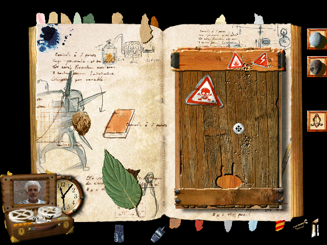
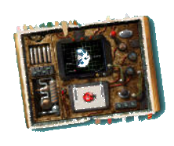
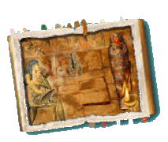
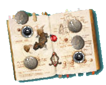
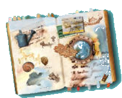

L'ALBUM SECRET - SOLUTION DETAILLEE
Voici quelques solutions (d’autres solutions existent pour certaines énigmes ou certains jeux) :

Grenouille
Il faut faire la photo de la grenouille cachée dans un papier froissé et la photo du galet trouvé dans la page de Tom. En les collant sur la page, on accède à la salle de cinéma.Salle de cinéma
On peut projeter 5 films. Deux sont présents quand on arrive. Les autres sont dispersés dans l’album. Le dernier film est donné à la fin de l’aventure.Jardin
Faire la photo d’une coccinelle et d’une pomme de pin. La coccinelle et la pomme de pin se trouve dans l’écran Grenouille. En les collant sur la page, on obtient le code permettant d’ouvrir la porte.Fleurs
Pour faire la photo de fleurs : il faut d’abord poser les graines dans la terre en bas à gauche de l’écran. Puis arroser. L’arrosoir se trouve dans la page Hublot. Quand les fleurs ont poussé dans la page, le papillon Citron apparaît. Il suffit alors de le photographier et de coller sa photo sur son emplacement.Araignée
La mouche doit rentrer dans le trou où clignote la lampe en bas à droite de l’écran. Il y a plusieurs solutions :- lui faire suivre patiemment le chemin à travers la toile.
- forcer le passage.
- se servir du feu (si vous l’avez déjà trouvé) pour éloigner l’araignée.
- faire sortir la mouche en bas de la page et se rendre directement vers le trou.
N.B. : Ne pas oublier de cliquer sur le gant. En trouvant le second situé dans le sarcophage, on pourra prendre les animaux fragiles ou dangereux (mouches, scorpions, araignées).
Entrée labo
Pour déplacer les pierres, on peut se servir des fourmis ou de la coccinelle. Il faut ensuite tourner les cadrans face au nord indiqué par la boussole (cette dernière est dans la page Pyramide...). Un indicateur sonore permet également de trouver la combinaison sans boussole.Laboratoire
On peut apporter les animaux et les analyser en les posant sur la plaque en bas de l’écran, un par un. Pour faire apparaître le résultat de l’analyse, cliquer sur la flèche clignotante. Pour transformer un animal en un autre animal, cliquer sur l’éprouvette située en haut à gauche.
Atelier
Déplacer les aiguilles sur 10 h 10. Le coffre s’ouvre. On peut prendre le marteau-piqueur en cliquant sur lui. Pour le mettre à nouveau en marche, cliquer sur son icône. Le marteau-piqueur servira ensuite dans la page Cellier et dans la page Hublot.Pyramide
Il faut déplier le rouleau de parchemin et cliquer sur le dromadaire. On accède à la page Désert.Désert
Prendre le scorpion en photo. Placer la photo sur le côté. Pour pouvoir saisir la dernière pièce du puzzle, il faut faire venir un animal dans la page pour le distraire.Sarcophage
Cliquer sur le flambeau pour activer l’outil feu. Se servir du feu pour pousser les scorpions dans le trou. On peut également les faire disparaître en maintenant un animal au dessus du trou.Une fois le sarcophage ouvert, prendre la momie en photo.
Ne pas oublier de cliquer sur le gant avant de sortir de la page. En trouvant le second gant situé dans la page Araignée, on pourra prendre les animaux fragiles ou dangereux (mouches, scorpions, araignées).

Base spatiale
Apporter la clé trouvée dans la page Cellier. La poser devant la porte. Cliquer pour faire apparaître l’écran Météorites. Détruire les météorites sans se faire percuter. On accède ainsi à la page fusée.Fusée
Pour faire décoller la fusée, assembler les pièces en commençant par le bas. Se servir du plan si nécessaire. Ne pas oublier les petites pièces situées sur les côtés et la pointe. Une fois la fusée montée, il faut placer le bijou correspondant à la constellation du Dragon exactement sur son emplacement (repérer sur le bijou les points correspondant aux étoiles). Le bijou se trouve dans la page Stade. La fusée décolle.
Planète
Il suffit d’attendre un peu pour voir apparaître le dragon. Le prendre en photo puis coller sa photo sur la page Base Spatiale.Balance
Il y a beaucoup de combinaisons possibles. Essayer par exemple : un galet blanc (110 g) + la coccinelle (10 g). Voici une astuce trouvée par certains enfants : quand on arrive tout près du poids indiqué (114 g par exemple), il suffit de prendre des photos (une photo pèse 2 g) et de les poser sur la balance pour compléter !Usine
Un conseil : composer un circuit et ne bouger ensuite que les parties permettant de faire rentrer les charges sur les bons emplacements.Stade
Pour accéder à la piste de course, il suffit de cliquer sur la porte grillagée.Piste de course
Le champion est un des trois escargots de l’album (le gris, celui qui se trouve près du hublot) ! S’il a été transformé dans le labo, c’est la tortue qui gagne.Flûte magique
Bien observer et suivre patiemment les instructions données par Ernest. Si cela ne suffit pas on peut "tricher" en notant l’emplacement des notes à rejouer sur une feuille de papier.Cloportes héroïques
Protéger les cloportes en détournant les pierres pour éviter qu’il ne soient écrasés. En mangeant le papier, il font apparaître la statuette cachée à l’intérieur. On peut "tricher" en protégeant les cloportes avec des objets (galets, par exemple).Cellier
L’un des jeux les plus difficiles de l’album. Un escargot peut vous donner la solution. Commencer par dégager tous les obstacles qui peuvent gêner l’escargot dans sa manœuvre. Surtout il faut être patient et le laisser terminer son triangle. Une fois le triangle dessiné sur la page, faire des trous le long des lignes jusqu’à ce que la page soit ouverte.Cave
Deux conseils : revenir après chaque mèche au centre de l’écran et mémoriser le parcours du feu.Souterrain
Eteindre pour avoir une chance de voir la souris. On peut l’attraper. Quand on la pose dans une page, elle s’enfuit et retourne toujours dans son "trou" noir. Ne pas oublier de prendre le détecteur de métaux avant de quitter la page.Hublot
Il suffit de cliquer plusieurs fois avec le marteau piqueur pour casser la vitre.
Mare
Apporter la grenouille. La faire traverser en la faisant sauter sur les nénuphars. Repérer préalablement le bon "timing" pour partir.Ile au trésor
On accède à l’île au trésor depuis la page Pyramide après avoir collé les photos du scorpion et de la momie. Cliquer sur la longue vue, le hublot s’ouvre et vous permet de vous déplacer au-dessus de l’île. La position dans l’île est indiquée par le viseur qui se déplace simultanément sur la page de gauche.
Pour trouver l’emplacement du trésor : poser sur le socle en métal le détecteur de métaux trouvé dans la cave. En se déplaçant au dessus de l’île, il se met à biper plus ou moins rapidement. Plus on s’approche du trésor, plus les bips sont rapprochés. Au dessus du trésor il siffle.
N.B. : En demandant l’aide de Tom (sifflet) sur la carte au trésor, on apprend quelques détails concernant son histoire.